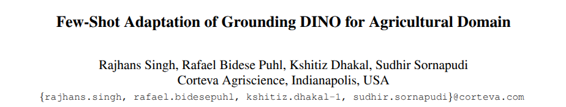
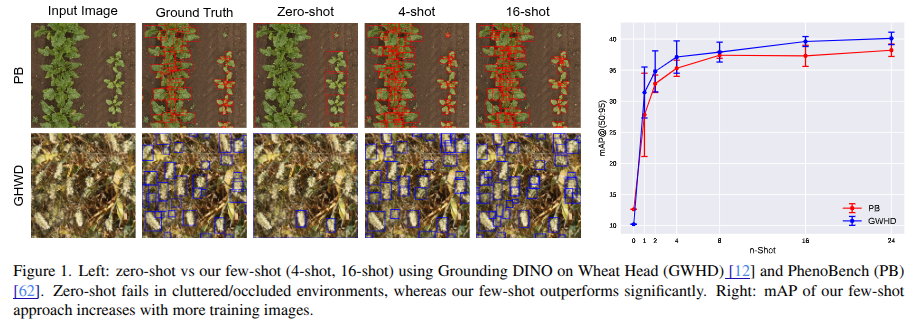
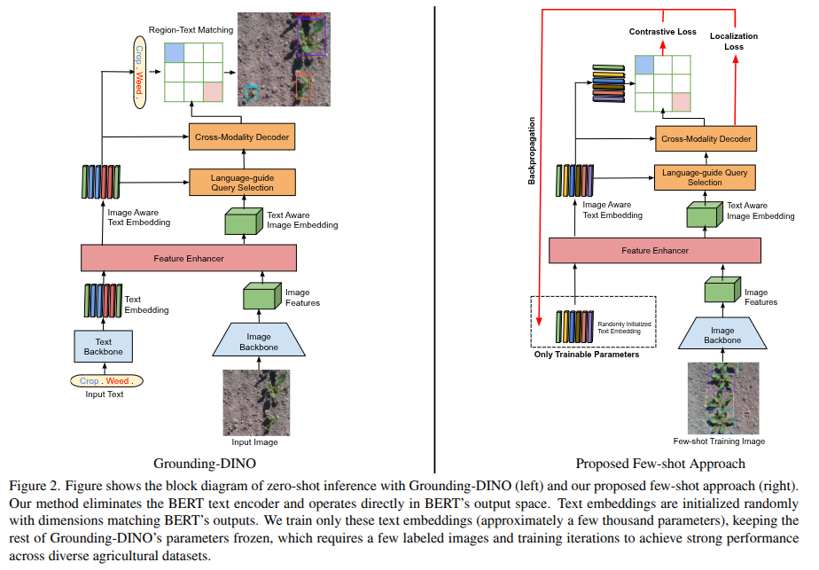
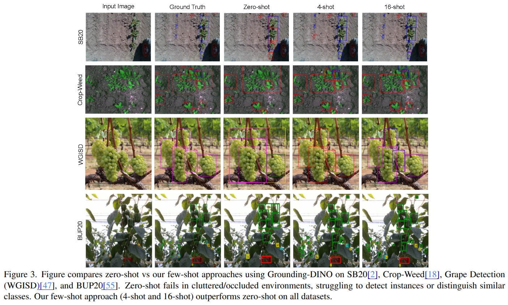

Publication date :
June, 04 2025
Boubacar DIALLO Ph.D.
- R&D Engineer in DATA SCIENTIST | IA - VISION | ROBOTICS | SPECIALIZED LLMs
AI can be used in different areas of agriculture: we can identify in particular :

Context
Why rely on expensive, labor-intensive annotations when AI can learn crop detection from just a few photos?
This paper turns Grounding-DINO into a fast, prompt-free few-shot learner for agriculture.

What It’s About
The paper introduces a lightweight, few-shot adaptation of the Grounding-DINO open-set object detection model,
tailored explicitly for agricultural applications. The method eliminates the text encoder (BERT) and uses
randomly initialized trainable embeddings instead of hand-crafted text prompts, enabling accurate detection
from minimal annotated data.
Why It Matters
High-performing agricultural AI often demands large, diverse annotated datasets, which are expensive and time-consuming.
This method rapidly adapts a powerful foundation model to diverse agricultural tasks using only a few images,
reducing costs and accelerating model deployment in farming and phenotyping scenarios.
How It Works
- Grounding-DINO typically uses a vision-language architecture (image and text encoders).
- This adaptation removes the BERT-based text encoder and replaces it with randomly initialized fine-tuned embeddings with minimal training images.
- Only these new embeddings are trained, while the rest of the model remains frozen.
- This simplified design avoids the complexities of manual text prompt engineering and dramatically reduces training overhead.

Key Result
Across eight agricultural datasets, including PhenoBench, Crop-Weed, BUP20, and DIOR, the few-shot method
consistently outperforms:
- Zero-shot Grounding-DINO, particularly in cluttered or occluded scenarios.
- YOLOv11, by up to 24% higher mAP with just four training images.
- Prior state-of-the-art few-shot detectors in remote sensing benchmarks

Broader Impact
This work presents a scalable and cost-effective way to deploy deep learning in agriculture,
even with limited data. It demonstrates how foundation models can be tailored to real-world
domains like plant counting, insect detection, fruit recognition, and remote sensing,
making AI more accessible and valuable for sustainable and efficient farming practices.
Reference
Singh, R. B. Puhl, K. Dhakal, and S. Sornapudi,
“Adaptation of Grounding DINO for Agricultural Domain,”
in Proc. IEEE/CVF Conf. Comput. Vis. Pattern Recognit. (CVPR), 2025.
Paper link:
https://arxiv.org/abs/2504.07252v1